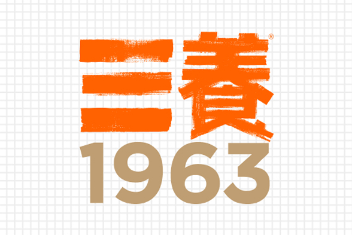
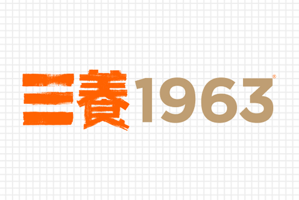

삼양1963
용량 131g
용량 131g

용량 115g

용량 140g
1963년, 삼양식품은 굶주림을 해결하겠다는 마음으로 한국 최초의 라면을 만들었습니다. 그 정신을 오늘의 입맛으로 다시 풀어낸 브랜드가 삼양1963입니다.
삼양식품은 한국 최초로 라면을 선보이며 국민의 식탁에 새로운 한 끼를 열었습니다. 그 시작의 마음을 지금도 이어가고 있습니다.
진한 사골을 담아 새롭게 선보인 삼양1963은 깊은 국물과 쫄깃한 면발로 다시 돌아왔습니다.
대한민국 라면의 시작과 귀환을 네 글자로 표현했습니다.
골든블렌드 오일로 튀긴 깊은 풍미의 면
소고기, 사골, 닭고기와 무, 파를 더해
깊고 조화로운 국물
청양고추를 더해 얼큰하고 개운한 맛
큼직한 단배추, 대파, 홍고추로
구성한 풍성한 건더기
삼양1963 로고는 브랜드의 정체성을 담은 핵심 자산입니다.


삼양식품의 글로벌 마케팅을 위한 광고 홍보 영상 입니다.
라면의 귀환, 삼양1963
36년 동안 잃어버렸던 옛 우지라면이 지금 되살아납니다.
승제쌤이 끓여주는 삼양1963 레시피!